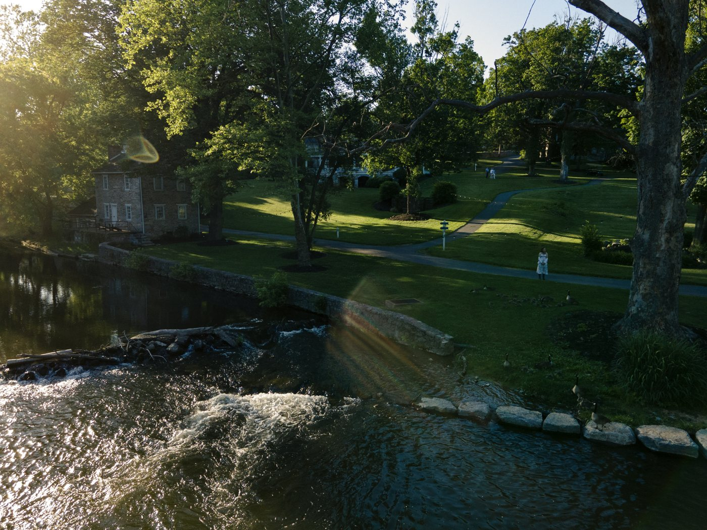

Wellness & care
A better way to live: mind, body and community.
At Basecamp, wellness isn’t something you turn to when you’re sick — it’s part of every day. Better health starts with daily life: fresh air, trails at the door, yoga by the creek, healthy food, the Spa and neighbors of every generation.
Whether you’re healthy or need more support, this is the place for you. And if life ever asks for more, support is right here, so needing more never has to mean leaving.
The Basecamp continuum of care
Most days, residents only use Level 1. When needs change, they step up the ladder — and back down again — without ever giving up their home.
Everyday wellness
Trails, fresh air, yoga and fitness classes, healthy food, the Spa and lifelong learning — plus a community of the family you have and the family you build.
Proactive health
Concierge functional medicine: unhurried visits and personal plans for staying well.
Support at home
Basic help with daily life: wellness check-ins, getting around campus, light care.
Recovery & respite
A short stay after surgery or a hospital visit, or a break for family caregivers.
Acute care
Priority placement with a partner hospital and intensive rehab, then a smooth return home through recovery.
Care services are in development. Details subject to change.
The acute safety net
Priority care when it matters, and a clear path home.
For advanced or complex medical needs, or sudden rehabilitation, Basecamp has a partnership with a major healthcare provider — a leading operator of long-term acute care and inpatient rehabilitation hospitals. Instead of waiting through the usual placement process, residents have a direct, priority path to specialized care — and back home again.
01Expedited placement
If an illness, stroke or orthopedic event happens, residents get priority placement into a partner long-term acute care or inpatient rehabilitation hospital.
02Specialized care
Hospital-level treatment and intensive rehabilitation from a team that focuses on complex recovery.
03Recovery at home
Once stabilized, residents transition smoothly back to Basecamp, where the on-site concierge team and nursing students manage post-acute recovery.

The caregiver gap
Built for the family caregiver.
Basecamp was shaped by the experience of caring for aging parents. Integrated suites, elevators, respite stays and on-campus care let families keep generations together under one roof — a need that conventional housing and senior living both leave unmet.
Multigenerational homes
A parent lives in a private suite within the family home, with a separate entry.
Respite capacity
Recovery suites host respite stays that give caregivers relief.
Care on demand
Basic care on campus, booked as needed, so family members can stay family first.
Care services are in development. Details subject to change.
Be among the first to call it home.
Join the waitlist for a first look at floor plans, pricing and care details — or come stay midweek and see it for yourself.